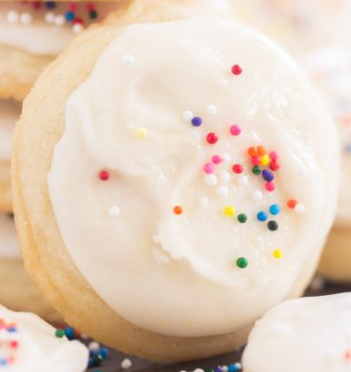
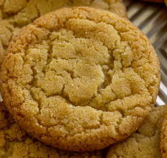
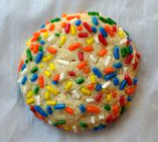
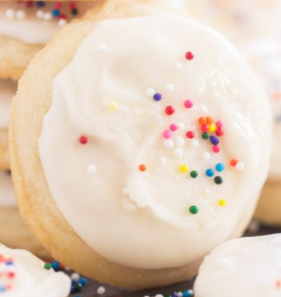
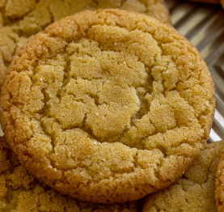
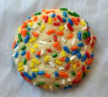

niektoré sušienky označiť a je potrebná kontrola.
Predstavenie nášho modelu umelej inteligencie
Prehľad
Náš špičkový model umelej inteligencie je navrhnutý tak, aby pomáhal pri anotácii a analýze sušienok na diagnostiku SušienkoChoroby.
Náš model AI je starostlivo vycvičený na rozsiahlom súbore anotovaných snímok sušienok, ktoré starostlivo označili sušienkoexperti.
Prostredníctvom pokročilých algoritmov strojového učenia bol model vycvičený na identifikáciu a klasifikáciu rôznych vlastností sušienok s pozoruhodnou presnosťou.
Limitácie
Ako pri každom systéme umelej inteligencie sa môžu občas vyskytnúť falošne pozitívne alebo falošne negatívne výsledky.
Preto ľudská kontrola je kľúčová pri interpretácii označení modelu.
Takisto náš model neanotuje všetky sušienky, ale len tie, s ktorými si je najviac istý.
Obrázky je teda potrebné ešte skontrolovať a poprípadne opraviť.
Výkonnosť
Priemerná chyba modelu: ±5%
Maximálna chyba modelu: ±15%
Nástroj umelej inteligencie dokáže vysvetliť 85 % odchýlok od trénovaných údajov

 







Bolo niektoré rozhodnue AI modelu nekorektné?
Thank you for your feedback!
Zapracujeme Vaše návrhy a vylepšenia uvidíte pri najbližšom spustení automatickej anotácie!

Information about AI decisions
Microtubular defect: Compound
Dynein arms defect: No arms missing
Confidence level: 90%
Decision tree

Microtubular defect type

Dynein arms defect type

Microtubular defect feature

Dynein arms defect feature

Annotated cilia:

Similiar compound cilias with no missing arms:


Why is it not other defect:


Pošli nám svoj názor
Krok 1 z 5
Ďakujeme za vašu spätnú väzbu na CookieScan!
Vážime si, že ste si našli čas a podelili sa s nami o svoje názory. Vaša spätná väzba je neuveriteľne cenná a pomôže nám zlepšiť skúsenosti so systémom CookieScan pre všetkých našich používateľov.
Ak máte ďalšie pripomienky alebo návrhy, neváhajte nás kontaktovať. Snažíme sa stále vylepšovať Vaše skúsenosti.
Ďakujeme Vám ešte raz za Vašu cennú spätnú väzbu!
1. Celková spokojnosť
Ako ste spokojný so systémom CookieScan?
2. Jednoduchosť používania:
Ako jednoduché bolo naučiť sa používať CookieScan?
Stretli ste sa pri používaní s nejakými ťažkosťami alebo problémami?
3. Funkčnosť a vlastnosti:
Ktoré funkcie programu CiliaScan považujete za najužitočnejšie pri anotovaní sušienok?
Existujú nejaké ďalšie funkcie alebo vlastnosti, ktoré Vám v CookieScan chýbali?
4. Presnosť a spoľahlivosť:
Ako presné sú podľa vás anotácie modelu AI v CookieScan?
Stretli ste sa s prípadmi, keď boli anotácie modelu AI nepresné alebo nespoľahlivé?
5. Návrhy na zlepšenie
Máte nejaké návrhy, ako by sme mohli zlepšiť CookieScan, aby lepšie vyhovoval Vašim potrebám?
6. Demografické údaje:
Voliteľné:
: Uveďte niektoré demografické informácie (napr. povolanie, roky praxe v sušienkach), ktoré nám pomôžu lepšie pochopiť našich používateľov.7. Ďalšie informácie:
Je ešte niečo, o čo by ste nám chceli povedať?